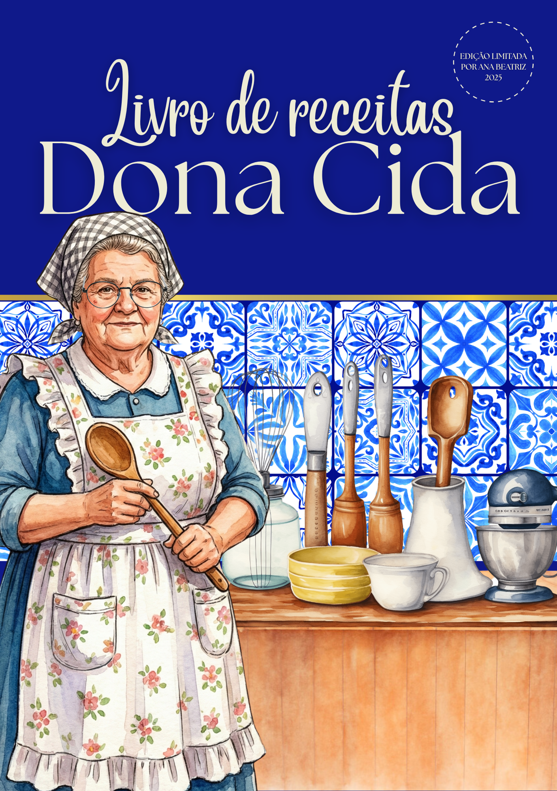

Entre e sinta-se em casa, pois a cozinha da vovó está sempre aberta para quem busca o verdadeiro conforto em forma de comida. Neste espaço, reunimos as receitas mais queridas da Dona Cida, compartilhando cada detalhe e truque que aprendemos ao pé do fogão, para que você possa levar para o seu dia a dia o sabor nostálgico de um tempo onde a maior alegria era ver a família reunida em volta de uma mesa farta.